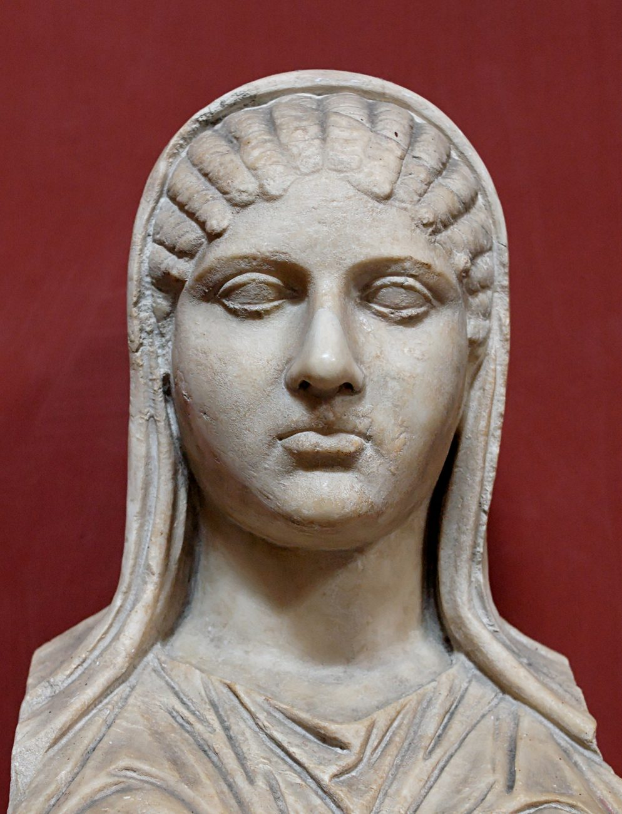

Unit 7 · Women in ancient Greece · Lesson 11
Aspasia of Miletus II
Three historians, one woman. What was Aspasia’s role and significance, and why do historians disagree about her?
Year 11 Ancient History · Present with → or space · Read on a phone with R

Images: Jastrow (Public domain). Full details on the last slide.
Review · books closed · 6 minutes · press K for the timer
Five questions from Lessons 8–10
- Which city did Aspasia come from, and what did that make her in Athens? Miletus: Plutarch says it “is generally agreed” that she was “a Milesian by birth, daughter of one Axiochus”. A free foreigner in Athens was a metic, without citizen rights.
- When was Aristophanes’s Acharnians performed, and why does the date matter for Aspasia? In 425 BCE, at the Lenaea festival. It is the one source in Lesson 10 probably written in her lifetime (her dates are not recorded), but it is a comedy: a character joking that the Megarians took “two harlots of the house of Aspasia”.
- What view of women’s reasoning does Aristotle give in Politics 1.1260a? That the “female has it, but without full authority”: it is the deliberative part of the soul. It is an argument from nature, by one philosopher, probably written after women were already kept out of the Assembly.
- What happens in Aristophanes’s Ecclesiazusae, and when was it produced? About 391 BCE (the date is disputed). Women disguise themselves as men, take over the Assembly, and have the running of the city handed to them: a comic fantasy, not evidence that women voted.
- Writing · move down the modality scale: “Pliny proves that Lysimache was powerful.” “Pliny’s note suggests that Lysimache served as a priestess for a long time and was honoured with a statue; it cannot show how much power she had.” “Proves” is too strong: Pliny’s sentence says only that a sculptor made her statue and that she was priestess for sixty-four years.
Mark your own answers in a different colour. Which question did you find hardest?
Learning intentions and success criteria · 2 minutes
Today’s goals
- explain the role and significance of Aspasia
- synthesise historians’ interpretations in one answer
- explain Aspasia’s role, separating evidence from tradition
- explain how Glenn, Henry and Wallace interpret her differently
- set one historian against another in a single sentence
Syllabus outcomes: AH-11-03 explains the role and significance of forces, features, events, individuals and groups in shaping the past · AH-11-04 accounts for the different perspectives of individuals and groups in their historical context · AH-11-07 communicates historical understanding, applying historical knowledge, terms and concepts. Life Skills: AH-LS-06 investigates people, events or developments of the ancient world · AH-LS-11 communicates information about the past using historical terms and concepts.
Note-making · the routine for the whole course
How to structure your notes
questions and key terms, written after
short phrases, arrows (→ leads to), abbreviations (c. = about; BCE = Before the Common Era)
- 1A new page for each lessonA cue column about a quarter of the page wide; title and date at the top; room for a summary at the bottom.
- 2Listen and look, then writeDon’t copy while a slide is being explained. Phrases, not sentences; a historian’s name for every claim.
- 3Write your own notes at each ✎ checkpointThen compare with the model notes, one row at a time. Add what you missed in a second colour.
- 4Write the cue questions afterwardsUse exam verbs: identify, describe, explain. To revise, cover your notes and answer the cues.
- 5Finish with a three-sentence summaryTwo checkpoints today: three historians · comparing them. Your 8-mark answer goes in your answer booklet, not your notes.
Key vocabulary · add to the unit word wall
Words for the debate
| Writing terms | Meaning |
|---|---|
| Synthesis of interpretations | Setting historians against each other in one sentence: ‘Glenn argues…, whereas Henry…’ |
| Present tense for historians | Past tense for events (Pericles died in 429 BCE); present tense for what a historian does (Wallace argues …). |
| Added today | Meaning |
| Interpretation | A historian’s explanation of what evidence means. Another historian may read the same evidence differently. |
| Content terms | Meaning |
|---|---|
| Metic | A free foreigner living in Athens, without citizen rights (e.g. Aspasia of Miletus). |
| Hetaira | A companion or courtesan, usually not a citizen. |
| Added today | Meaning |
| Parody | A comic imitation of something serious, to make fun of it. |
| Biographical tradition | The stories told about one person over the centuries: for Aspasia, from the first jokes about her to modern books. |
| Rhetoric | The art of speaking persuasively in public, taught and practised in Athens. |
1 · Three historians, one woman · I do — what we have to work with (from Lesson 10)
Aspasia: the ancient evidence in brief
| Source | When, and what kind | What it says about her |
|---|---|---|
| Aristophanes, Acharnians 524–529 | 425 BCE · a comedy | A character says the Megarians took “two harlots of the house of Aspasia”, and so “Greece is set ablaze”: a joke blaming the war on her household. |
| Plato, Menexenus 235e–236b | after 387/6 BCE · a dialogue | Socrates calls her “my instructor” in rhetoric, and says she rehearsed a funeral speech to him, parts of it prepared, “as I imagine”, “at the time when she was composing the funeral oration which Pericles delivered”. |
| Xenophon, Oeconomicus 3.14 and Memorabilia 2.6.36 | 4th century BCE · Socratic works | Socrates says “I will introduce Aspasia to you” to explain good marriages, and reports her advice to him. |
| Plutarch, Pericles 24, 32 and 37 | about 100–120 CE · a biography, more than five centuries after Pericles | A Milesian, “daughter of one Axiochus”; “as some say” Pericles valued her “political wisdom”; “it appears” he had a son by her. In ch. 37 the Athenians let Pericles enrol an illegitimate son in his phratry; Plutarch does not name the mother there. |
Every one is a comedy, a dialogue or a later biography, written by someone else. Historians disagree about what to make of them.
1 · Three historians, one woman · I do — three extracts
Glenn, Henry and Wallace on Aspasia
H1 · Cheryl Glenn (1994; 1997)
Writes on the history of rhetoric. Article: ‘Sex, Lies, and Manuscript: Refiguring Aspasia in the History of Rhetoric’ (1994); book: Rhetoric Retold (1997).
She opens with a nineteenth-century print of Aspasia: “Aspasia comes down to us as an odalisque”. Women, she says, “have been closed out of the rhetorical tradition”.
The opening of the 1994 article; only the opening is quoted here.
In short (the idea, not her words): she recovers Aspasia as a rhetorician and teacher who was left out of the history of rhetoric.
H2 · Madeleine Henry (1995)
Prisoner of History: Aspasia of Miletus and Her Biographical Tradition (Oxford University Press, 1995).
“We can say remarkably little about Aspasia of Miletus” (p. 127).
Quoted in Robert Wallace’s review (1996): we have Henry’s words only as he quotes them.
In short (Wallace’s description): she follows the traditions about Aspasia from Old Comedy to modern fiction, with what Wallace calls her “scholarly caution” about the evidence.
H3 · Robert Wallace (1996)
Classics, Northwestern University. A review of Henry’s book in the Bryn Mawr Classical Review.
“… it is abundantly clear—and mostly is to [Henry] as well—that portraying Aspasia as Perikles’ wise counsellor and teacher was a parody of that tradition: texts such as the Pedetai and the Menexenos were not meant seriously.”
His own words (he spells the names “Perikles” and “Menexenos”).
In short: the ancient portraits of her as Pericles’s wise counsellor and teacher were jokes, and Henry mostly agrees.
Wallace’s review does not mention Glenn, and Glenn (1994) wrote before Henry’s book and Wallace’s review. Setting her against Henry and Wallace is our comparison.
1 · Three historians, one woman · I do — think aloud: what would each make of Menexenus 236b?
One sentence, three readings
… I was listening only yesterday to Aspasia going through a funeral speech for these very people. For she had heard the report you mention, that the Athenians are going to select the speaker; and thereupon she rehearsed to me the speech in the form it should take, extemporizing in part, while other parts of it she had previously prepared, as I imagine, at the time when she was composing the funeral oration which Pericles delivered; and from this she patched together sundry fragments.
A dialogue written after 387/6 BCE, more than forty years after Pericles died · trans. W. R. M. Lamb (Loeb, 1925), Perseus
What would each historian make of this? Think first.
- 1Wallace: a jokeHe names the Menexenos among the texts “not meant seriously”, so he would not use Socrates’ claim as evidence that she wrote or taught anything.
- 2Henry: a character built from comedyWallace says Henry shows how the Aspasia of the Menexenos “emerged out of” her portrayal by the comic poets. On that view 236b is part of a tradition, and Socrates’ “as I imagine” marks his claim as a guess.
- 3Glenn: a woman who spoke and taughtProbably the other way: for a historian of rhetoric, a text that has a woman composing a speech is the kind of passage that has been left out. This is our inference from her title and opening, not her words.
Same sentence, three readings. Why might they read it so differently? Keep your answer for the exit ticket.
Notes checkpoint 1 of 2
Three historians and one sentence
2 · Comparing the historians · We do — in pairs, 3 minutes, then check · use the extracts you have just read
Complete the historians’ cards
For each historian, fill in four boxes in your booklet: claim · evidence used · what it explains · what it leaves out. Use only what the extracts show, and say when you cannot tell.
| Historian | Claim | Evidence used | What it explains | What it leaves out |
|---|---|---|---|---|
| Glenn (1994) | Aspasia belongs in the history of rhetoric (the idea; her argument’s words not seen) | Opens with a nineteenth-century print that shows Aspasia as an odalisque; the rest is not in the extract | Why women, and Aspasia, are missing from the history of rhetoric: “closed out of the rhetorical tradition” | The opening does not test whether the ancient portraits of her as a teacher were meant seriously (the question Wallace raises later, in 1996) |
| Henry (1995) | “We can say remarkably little about Aspasia of Miletus” (p. 127, via Wallace) | The traditions about her, from Old Comedy and fourth-century dialogue to modern fiction (Wallace’s description) | How her image was built up by later writers, so that little of it can be trusted | Wallace says she gives too little on Aspasia’s family and marital status |
| Wallace (1996) | The wise-counsellor portrait was “a parody”; Henry mostly agrees | The Pedetai and the Menexenos, which he calls “not meant seriously” | Why the picture of her as Pericles’s teacher should not be taken as history | He says “We can form no impression of her as a person”; his own suggestions are about her family and status (from an inscription), not about what she did |
2 · Comparing the historians · We do — opinion continuum · 3 minutes · stand on the line, or put a sticky note on it
Where do you stand?
- Place yourself on the line: which end does today’s evidence push you towards?
- Be ready to name one historian or one source that moved you.
Cold call one student at each end: which extract moved you, and what would change your mind?
- For whom? (which people, then or later?)
- For what? (what did she do, or what was she used for?)
- For how long? (in her lifetime, or after?)
A named historian or source, one hedge (probably, may), and what evidence would move you along the line.
Notes checkpoint 2 of 2
Where the historians pull apart
3 · Writing focus · 7 minutes · I do → We do → apply
Writing focus: set one historian against another
To synthesise interpretations, put two historians side by side in one sentence. Each is in the present tense (what a historian does), the two are joined by whereas, and you end with your own judgement of what the contrast shows. Each person’s own words go to that person.
Worked example, written for this lesson, on Unit 4, not on Aspasia: How do Webster and Hingley study Boudicca differently?
Webster (1978) reconstructs the revolt of 60 or 61 CE as a campaign, to judge by his chapters on the sources and ‘The Trail of Destruction’, whereas Hingley says that his book with Unwin (2005) follows her story as it was ‘lost in the post-Roman ages and reinvented again’; her significance therefore depends on which Boudicca a historian studies, the leader of the revolt or the figure that later ages remade.
Historian 1 · present tense, hedged
whereas + historian 2 · his own words, his own name
Your judgement · what the contrast shows
Open your 8-mark answer with one sentence that sets one historian against another on Aspasia: present tense, whereas, then your judgement.
“[Historian] argues …, whereas [historian] …; [judgement] …”
Your Writing toolkit (booklet pages 3–4): attribution verbs.
Past tense for events; present tense for what historians do. Hingley and Unwin may be named for their book together, but words that are Hingley’s alone are Hingley’s.
3 · Writing focus · We do · add a third historian · 4 minutes
Which sentence adds Aldhouse-Green best?
Webster (1978) · Boudica: The British Revolt against Rome · his publisher’s contents page (later edition)His chapters include ‘The Evidence from the Ground’ and ‘The Trail of Destruction’.
Aldhouse-Green (2006) · Boudica Britannia: Rebel, War-leader and Queen · her publisher’s contents pageHer chapters include ‘Client kingship in the Roman empire: Prasutagus & Boudica’ and ‘Femmes Fatales: Boudica & Cartimandua’.
Vote with your A, B, C or D card on “3, 2, 1, show”. Then say what judgement the contrast supports.
- AAldhouse-Green (2006) paired Boudicca with Cartimandua in a chapter, whereas Webster’s chapters suggest a campaign history; so their books ask different questions of her.
- BAldhouse-Green (2006) pairs Boudicca with Cartimandua in a chapter, whereas Webster’s chapters suggest a campaign history; so their books ask different questions of her.
- CAldhouse-Green (2006) pairs Boudicca with Cartimandua in a chapter, whereas Hingley and Unwin warn against calling her anti-Roman; so their books ask different questions of her.
- DAldhouse-Green (2006) pairs Boudicca with Cartimandua in a chapter, whereas Webster’s chapters suggest a campaign history; so her book proves that he ignored women.
A slips into the past tense for what a historian does. C gives words that are Hingley’s alone (2023) to “Hingley and Unwin”. D overclaims: proves, from two contents pages, when neither book has been read.
3 · The 8-mark answer · 2 minutes · press K, click 20, then Start · deconstruct first, then check
Deconstruct the question before you write
Explain the role and significance of Aspasia of Miletus. Use two historians. 8 marks
Say each step in your head: verb · topic · limits · what your answer must do. Cold call: what does this question ask you to do?
| Step | This question |
|---|---|
| Verb | Explain. NESA: “Relate cause and effect. Make the relationships between things evident. Provide why and/or how.” So show why and how she mattered, not only what she did |
| Topic | Aspasia’s role (what she did, or is said to have done) and her significance (why it mattered) |
| Limits | Aspasia of Miletus only; two named historians, each credited with their own words; significance is for someone and for something: for whom, for what, for how long? |
| Do | 8 marks: a developed answer (department advice). Keep evidence apart from tradition; say what her role and her significance were, for whom and for what; set two historians against each other in the present tense; and end on your own judgement |
NESA, Glossary of key words. The “Do” row is department advice, not NESA’s.
3 · The 8-mark answer · writing · answer booklet · the timer keeps running
Write your answer
Explain the role and significance of Aspasia of Miletus. Use two historians. (8 marks)
- Start with your Writing focus sentence: one historian set against another, present tense, whereas, then your judgement.
- Role: what she did, or is said to have done. Say whose evidence it is and when: keep evidence apart from tradition.
- Significance: for whom, for what, for how long?
- Match each claim to its evidence: may, probably, suggests, shows. End on your own judgement.
Assess why Aspasia’s image has changed from ancient comedy to modern feminist scholarship: what does each version reveal about its makers?
Glenn: Aspasia belongs in the history of rhetoric (the idea). Henry: “We can say remarkably little about Aspasia of Miletus” (p. 127, via Wallace). Wallace: the wise-counsellor portrait was “a parody”, and Henry mostly agrees.
Frame: “[Historian] argues …, whereas [historian] …; this suggests …”
- 20:00 → 18:00Deconstruct and check first (done)
- 18:00 → 3:00Write · about 15 minutes for 8 marks
- 3:00 → 1:00Check: two historians, each credited · present tense · a judgement
- 1:00 → 0:00Pens down
Check · 4 minutes · pens down · vote with your A, B, C or D card on “3, 2, 1, show”
Which statement best matches Henry’s view?
- AAspasia ran a famous school of rhetoric for the men of Athens.
- BAspasia is someone about whom little can be said with confidence.
- CAspasia wrote the funeral speech that Pericles delivered to Athens.
- DAspasia was a character invented by the comic poets of Athens.
Henry (p. 127): “We can say remarkably little about Aspasia of Miletus”. A is not in any extract: Wallace writes that there “need be no more basis to the tradition that Aspasia was an intellectual than these satirical jokes”. C is a claim Socrates makes, with a hedge (“as I imagine”), in the Menexenus, a text Wallace calls “not meant seriously”, so it is not Henry’s view. D confuses the portrait with the person: Wallace says Henry shows how the Menexenos’s Aspasia “emerged out of” the comic poets’ portrayal, and Henry still speaks of mapping “the barest possibilities” for her life.
Check · exit ticket · 4 minutes · one sentence · collected
Exit ticket: set one historian against another
Write one sentence that sets Glenn against Henry or Wallace: present tense, then your own judgement.
Frame: “Glenn argues …, whereas Henry / Wallace …; …”
Hand it in with your answer. Then tick the “I can” statements you can do, and circle the one you are least sure of (1 minute).
- Both historians in the present tense: argues, says, states.
- The right names for the right words: Henry’s sentence comes via Wallace; “a parody” is Wallace’s.
- A contrast word (whereas, but, however) linking them.
- Your own judgement of what the contrast shows, with a hedge that matches the evidence.
Finish your notes If time · or at home
Summary: three sentences
- Who are Glenn, Henry and Wallace, and what does each say about Aspasia?
- Whose words are whose? Say which sentence is Henry’s and which is Wallace’s.
- Why do the historians differ, and what is your own judgement?
There is no model summary for today: your three sentences, and your 8-mark answer, are your own.
Practice and review · 1 of 4 · true, false, justify
True or false? Justify your answer
- 1Wallace says that Henry disagrees with him that the wise-counsellor portrait of Aspasia was a parody. False — he says that it is clear, and “mostly is to H. as well”, that the portrait was a parody.
- 2“We can say remarkably little about Aspasia of Miletus” is Wallace’s own sentence. False — it is Henry’s sentence (p. 127). Wallace quotes it in his review.
- 3Wallace’s review of Henry’s book discusses Glenn’s argument. False — it does not mention her, so setting Glenn against Henry or Wallace is the student’s own comparison.
- 4Glenn’s article opens with a nineteenth-century print that shows Aspasia as an odalisque. True — her opening paragraph says “Aspasia comes down to us as an odalisque”, and she then argues that women have been “closed out of the rhetorical tradition”.
- 5Wallace treats the Menexenos as a serious record of what Aspasia taught. False — he lists it among the texts “not meant seriously”.
- 6“Hingley and Unwin write that ‘We cannot assume that Boudica was instinctively deeply anti-Roman’.” False — those words are Hingley’s alone, from his own 2023 article. “Hingley and Unwin” fits only their book together (2005).
- 7The Vatican bust shows what Aspasia looked like. False — it is a Roman copy of the 2nd century CE, labelled Aspasia by an inscription; the date and subject of the original it copies are not known, so it is not a likeness.
Practice and review · 2 of 4 · writing · attribution, tense and synthesis
Fix a sentence, then write one
“Wallace said that ‘We can say remarkably little about Aspasia of Miletus’.”
Rewrite it so that the words go to the right person and the verb is in the right tense.
Henry states that “We can say remarkably little about Aspasia of Miletus” (p. 127), as Wallace quotes her.
Set Hingley (2023) against Aldhouse-Green (2006), as Hingley reads her book. Hingley writes that “We cannot assume that Boudica was instinctively deeply anti-Roman”, and that Aldhouse-Green’s book is one of the many accounts that portray her “as instinctively anti-Roman”.
Hingley argues that Boudicca was probably provoked into violence by Roman aggression rather than being “instinctively deeply anti-Roman”, whereas, as he reads her, Aldhouse-Green presents her “as instinctively anti-Roman”; on his reading, then, the two disagree about whether hostility to Rome came first or came from Roman actions.
Practice and review · 3 of 4 · extension · assess
Why has Aspasia’s image changed?
Assess why Aspasia’s image has changed from ancient comedy to modern feminist scholarship: what does each version reveal about its makers?
Shape: Judge → Evidence → Analyse → Evaluate → Resolve. NESA: assess means ‘Make a judgement of value, quality, outcomes, results or size.’ (Glossary of key words)
During the fifth century, in extant literature, Aspasia was only ridiculed, and only as an instrument, as a way to strike at Perikles. In the next century philosophers and others elaborated different aspects of her comic persona, often again to ridicule or undercut, but in any case almost entirely for their own purposes.
Robert Wallace, review of Henry, Bryn Mawr Classical Review 1996.04.07 · his own words
- A judgement of degree: how far the image changed, and why.
- Who made each version and what they wanted: a comic poet, philosophers, a biographer, a modern scholar.
- Historians kept in their own words: Wallace on the comic and philosophical tradition; Henry (via Wallace) on the tradition built by others; Glenn’s idea, with its limit.
- A resolving judgement that keeps the same degree.
Practice and review · 4 of 4 · cover your notes and answer from memory
Quick checks
- Which sentence of Henry’s does Wallace quote, and from which page? “We can say remarkably little about Aspasia of Miletus”, from page 127 of Prisoner of History (1995), quoted in Wallace’s review.
- What does Wallace call the portrait of Aspasia as Pericles’s wise counsellor and teacher, and does he say Henry agrees? “a parody of that tradition” (the tradition of the wise counsellor to statesmen), in texts “not meant seriously”. He says the point “mostly is to H. as well”: Henry mostly agrees.
- How does Glenn begin her 1994 article, and what is her aim, in one line? With a nineteenth-century print in which “Aspasia comes down to us as an odalisque”. Her aim, as the program summarises it (her argument could not be seen), is to put Aspasia back into the history of rhetoric as a rhetorician and teacher.
- Why is it wrong to write “Hingley and Unwin argue” for his 2023 words? The words are Hingley’s alone. Each historian’s own words go to that person; “Hingley and Unwin” fits only their book together.
- Which tense do you use for what a historian does, and which for events? Present for historians (Wallace argues …); past for events (Pericles died in 429 BCE).
- What three questions help you judge significance? For whom? For what? For how long? Significance is attributed, and for different purposes.
Sources and credits
Where everything comes from
Plato, Menexenus 235e–236b: trans. W. R. M. Lamb (Loeb, 1925), Perseus Digital Library (CC BY-SA 3.0 US). Plutarch, Pericles 24, 32 and 37: trans. B. Perrin (Loeb, 1916), LacusCurtius (public domain). Aristophanes, Acharnians 524–529: anonymous translation (The Eleven Comedies), Perseus. Xenophon, Oeconomicus 3.14 and Memorabilia 2.6.36: trans. E. C. Marchant (Loeb, 1923), Perseus. Aristotle, Politics 1.1260a: trans. H. Rackham (Loeb, 1944), Perseus. Pliny the Elder, Natural History 34.76: trans. J. Bostock and H. T. Riley (1855), Perseus. Short extracts for study; the Perseus text is CC BY-SA 3.0 US.
Historians: Robert Wallace, review of Madeleine M. Henry, Prisoner of History: Aspasia of Miletus and Her Biographical Tradition (Oxford University Press, 1995), Bryn Mawr Classical Review 1996.04.07: brief quotations for study, among them Henry’s p. 127 sentence as Wallace quotes it. Cheryl Glenn, “Sex, Lies, and Manuscript: Refiguring Aspasia in the History of Rhetoric”, College Composition and Communication 45.2 (1994), pp. 180–199 (doi:10.58680/ccc19948787): two phrases from its opening; her Rhetoric Retold (Southern Illinois University Press, 1997) is named, not quoted. For the Writing focus (Unit 4): Richard Hingley, interview with Benedict King, “The Best Books on Boudica”, Five Books (2022), and his article on the Durham University website (2023); Miranda Aldhouse-Green, Boudica Britannia: Rebel, War-leader and Queen (Pearson, 2006), and Graham Webster, Boudica: The British Revolt against Rome (Batsford, 1978), from their publisher’s contents pages (Aldhouse-Green; Webster, later edition). NESA, Glossary of key words.
Outcomes and content: NSW Education Standards Authority (NESA), Ancient History 11–12 Syllabus (2024). © NESA.
- Marble bust identified as Aspasia by an inscription (not visible here), a Roman copy; the identification is uncertain (Vatican Museums, Inv. 272) · Photo: Jastrow (2006) · Public domain · source

All images are public domain or openly licensed, and were resized or cropped for the web. Each is shared under the licence shown.